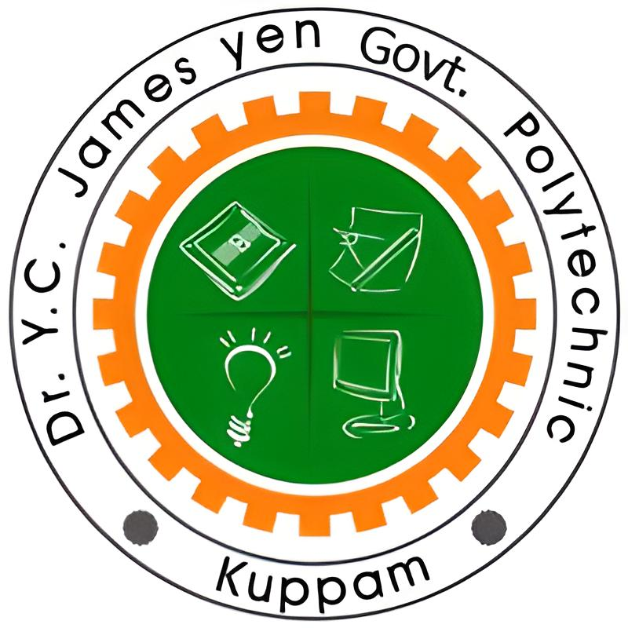

Dr. Y.C. James Yen Government Rural Polytechnic, Kuppam is the First Technical Institution located in an impressive picturesque and serene atmosphere at Kuppam, Chittoor Dt., a Tri-junction of Andhra Pradesh, Tamil Nadu and Karnataka States. The Institution is established , sponsored & managed by the Kuppam Rural Electric Co-operative Society Limited, (K.R.E.C.S.Ltd.,) Kuppam , a Govt. of India undertaking in 1998. This is the only Technical Institution in the entire State of Andhra Pradesh, functioning under the Co-operative Sector with financial contribution from the Govt. of Andhra Pradesh and the K.R.E.C.S. Ltd., Kuppam. It is approved by the A.I.C.T.E. New Delhi and Affiliated to S.B.T.E.T., Hyderabad, A.P. It is a Co-education Institute. Later, The institution has been taken over by the Government w.e.f. 28.3.2014 and the details of the institution has been depicted as prior to taken over and after taken over by the Government all the benefits are reaching the poor and downtrodden students of this institution.
The Administrative and Academic blocks, hostel buildings and Playgrounds are constructed in an extent of 25 acres of land. The Institution has high standards of Institutional and Residential facilities. It is provided with well equipped Workshops and Laboratories. The Class rooms are spacious and well ventilated. The Library is well maintained with vast collection of Texts, Reference books, journals, periodicals, Magazines etc. The hostel for boys as located in a serene environment within the campus with all the amenities. Traditional class room teaching is supplemented by e-learning Class room in each of the branches. In the recent past, with the initiative provided by the Special Commissioner of Technical Education, Andhra Pradesh, Vijayawada, a digital virtual class room has been established to get the best of the teaching inputs across the entire state of Andhra Pradesh.
| 1 | Diploma In Computer Engineering | 30+3(EWS) |
| 2 | Diploma In Electrical & Electronics Emgineering | 60+6(EWS) |
| 3 | Diploma In Mechanical Engineering | 60+6(EWS) |
| 4 | Diploma In Electronics & Communication Engineering | 60+6(EWS) |